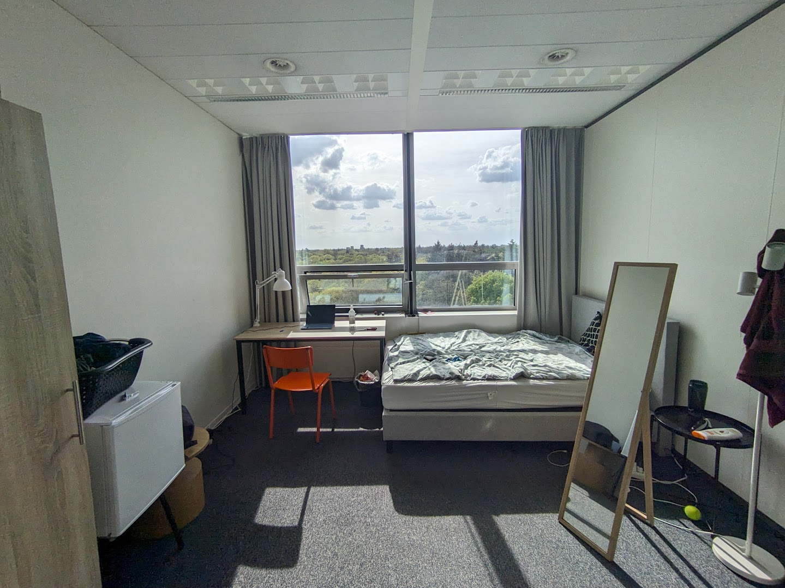
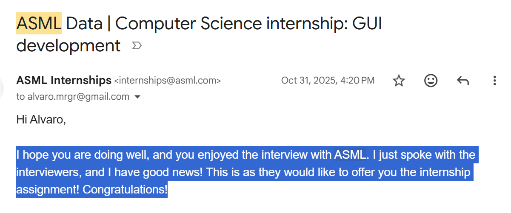
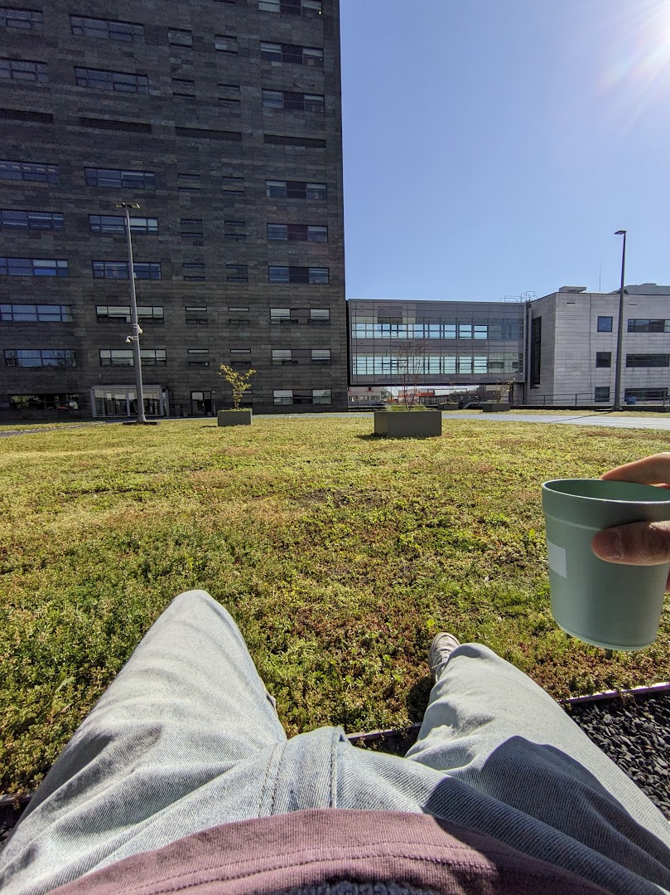
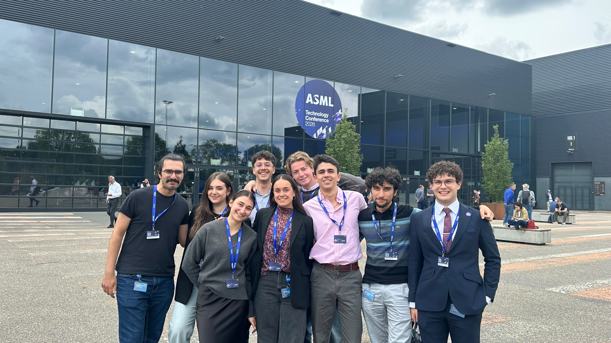
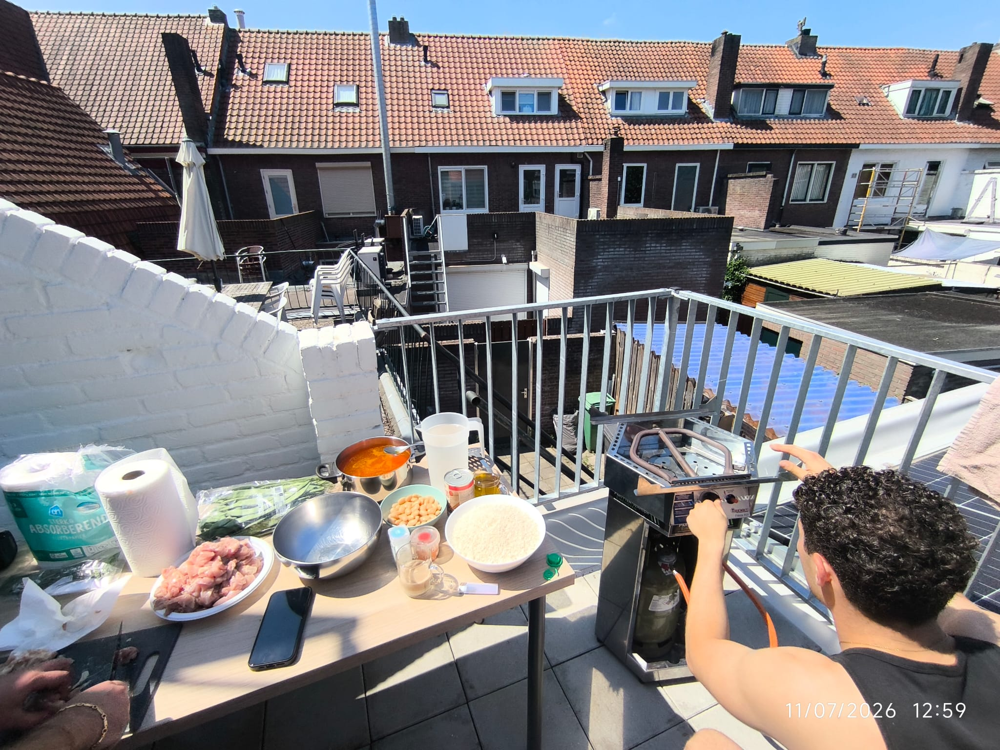
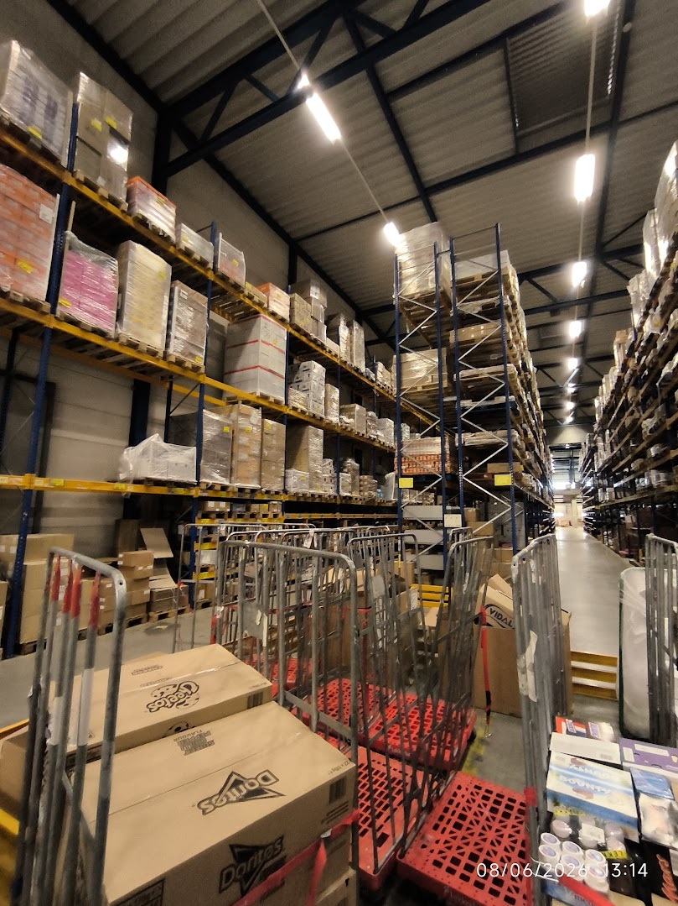
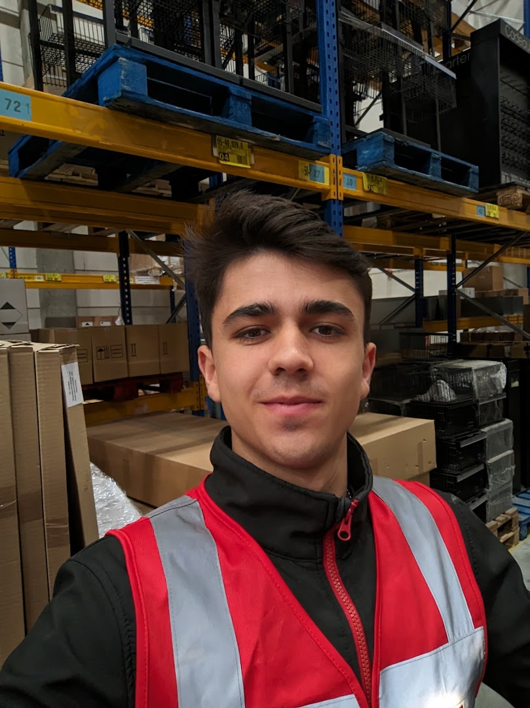
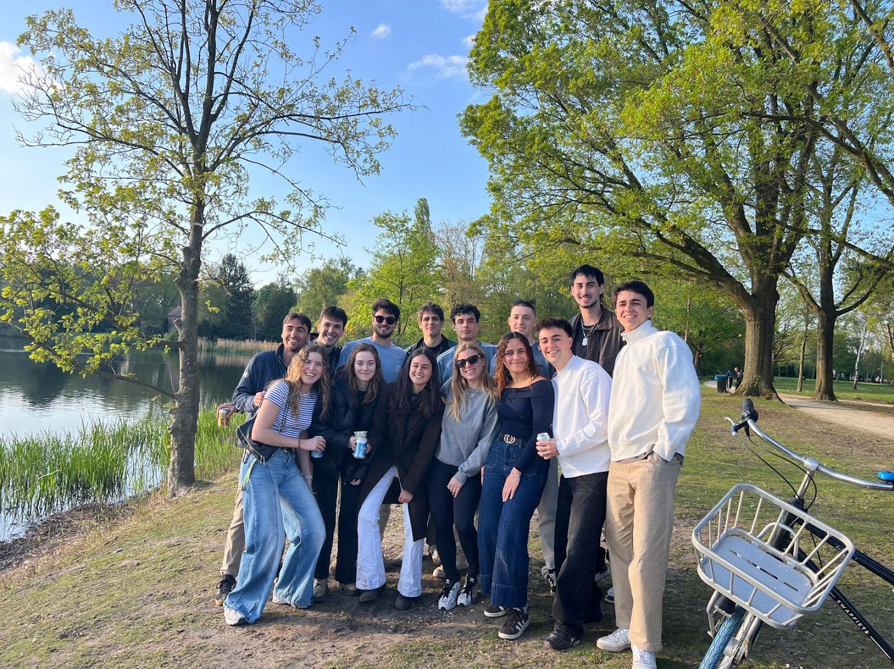

Recap of the first year of my master's
It's the 12th of July. We are in the middle of the summer, and as a european student I should be chilling in the sunny Spain with my friends🏖️
Unfortunately that's not the case this time - I will stay working in Eindhoven until the 2nd of August.
In this blog post, I am going to reflect on how I got here, how the academic year has been, what I have been doing, and what I could have done better to improve next year.
Let's start at the beginning: Last year, around these dates I had just signed the contract for a room in a student house in Den Bosch. Although I was going to attend TU/Eindhoven, I could not find a place there.
I still had a full month to enjoy my summer before I would move there in September. It's funny that during that time I met Diego and Pablo, two people that would later become good friends of mine in Eindhoven.
Fast forward to September, I landed in the Netherlands. The first arc of the year started.
The 'Den Bosch' Arc (Sep-Dec)
The place I was living in turned out to be hell. It was a one-floor, students-only house with 16 (!) individual rooms. The owners were a wealthy Dutch family that were making a juicy business out of it. With an average room monthly cost of 550€, they were making a monthly income of 8800€ - not bad.

The outside of the 16-room student house
The house was a complete disaster. Everything was messy and dirty: kitchen, bathrooms, hallways and living room. The owner arrived more than 1h later to the check-in, and after telling him the house needed proper cleaning he backfired at me saying that if I didn't like it I could leave.

The room when I moved in

Adding the bed

Plus the bed frame

Final setup!!
Out of the 16 people living there, around half were Dutch. There were 2 Indians, 2 Italians, 2 Ukrainians, 1 French and me. I didn't make any friends there. I would occasionally talk to one of the Ukrainian guys, Zhenia. He was the only one who would eat in the living room, the rest had lunch in their rooms.
Zhenia was smart as fuck. He was doing a Bachelor's in Math in TU/e and I could see he worked super hard all the time. He was a heavy linux user and was deep into the quant trading world. He made one of those Tiktok accounts with AI generated content millions of visualizations - all automated.
I respected him, but deep down we could never be friends, we had opposing views about life. I think war affected him a lot. He had very strong opinions: you should die for your country, and guns should be legal.
I had to commute daily for 2h to uni (1h per trip) and it wasn't the greatest thing. I could sometimes make use of the morning trips with uni assignments, but when I was in Eindhoven I had nowhere to go apart from being at uni. That was mentally tiring. There were some days where I would just deambulate with no clear goal. Plus the tickets were expensive, 7.80€ per round trip. I started collecting the tickets.
I was completely isolated in Den Bosch. It is not as open to internationals as other cities in NL, and I had all my life in Eindhoven, uni and friends mostly. I thought a good way to fill in my time was to get a job so I started looking for one. But no one would reply to my online applications. I even got rejected by the local supermarkets because I didn't speak Dutch (understandable).
But I was determined.
One day I went out for a walk and I stopped by every establishment I could find, asking for a job. I stopped by around 10. Out of those, only MC Donalds and a small sushi restaurant, Hayai Sushi, told me I could have an interview with them.
I gave the sushi place a try. It was owned by Sofian, a friendly Moroccan guy who was also the cook. After the first day we still hadn't discussed the salary. He brought me to the back of the bar (a bit sketchy I have to say) and we had to negotiate it. I ended up getting 14€ an hour. Pretty low, but I wasn't in the position to reject it. A few weeks later I would discover that all the rest of the workers there were 15 to 18 year old Moroccans that were getting paid 7€ an hour😂
The job was amazing. I had to deliver sushi to customers by car or scooter. I had never driven a scooter before that and it was cool as hell, fuck yeah. One of my last days there, police stopped me and told me I wasn't allowed to drive a scooter. Unfortunately, I got 5 speeding tickets that raised up to 700€ in total, making it impossible for me to save anything. I swear I wasn't going fast!!! Made me so angry...

It was soo cool I had so much aura!!

Brrom brooom
A friend from Eindhoven told me there were rooms available in a student room, I immediately booked one for December.
My time in Den Bosch would come to an end, and things would drastically improve from there. The thing I loved the most about it was a cat from one of the Italians living in the house. So cute!!! 😍

There was a beach nearby my house, it was so gooood

One day I was bored and I biked from Den Bosch to Eindhoven, 2 hours trip...

The bike I bough from Maarktplas for 35€!! Amazing

Den Bosch was actually beautiful

Den Bosch was actually beautiful x2

Me during my daily 2h bus ride

I went to my BSc graduation. I was the only one with a funny picture

The living room was actually cozy

At Mandi's house

Met a funny pig

Second bike I bought (this time 80€)

Selfie in my room

A friend lent me his traditional dutch coat!!
The internship arc (Jan-May)

My new room in Eindhoven, finally
Immediately after arriving in Eindhoven I felt relieved. The house was cleaner and more modern. The room had amazing views, and most importantly, I was living in Eindhoven which allowed me to have a more normal life.
Getting a student job or an internship was one of the goals I was aiming for when I started my master's (As stated in my blog post from September 2025 https://dkealvaro.github.io/blog/Starting-MSc/index.html). And of course I had been searching for one all this time.
I applied to 10 internships within ASML, and got two interviews in different positions. One of them was working in a web server with Django, the other was building a GUI for researchers.
I liked that both were about building stuff that had actual impact. In the first role they rejected me because of the availability - They were looking a student who could commit full time (For a Master's thesis). I had full-time university all this time.
In the second one I had to make a presentation about a past project I had worked on and I presented the following pdf. They liked it and sent me the offer, starting on February 2nd, ending the 1st of June. (4 months initially that would later extend into 6)

The acceptance email from ASML
Managing uni with the internship was not that hard in the beginning. I decided not to enroll in two courses so I could do the 32 agreed weekly hours for the internship. I usually have three courses in uni, but for the first 3 months of the internship I had only one.
My uni academic years are divided by 4 quarters. At the beginning of May we would switch to the fourth quarter, meaning I had to pick new courses. I decided to pick the usual 3 courses because I didn't want to delay my studies.
During the internship I really set my studies aside, they were not my priority. And it showed. Out of the 3 courses I took during the internship (one course was shared across Quartiles), I passed one with a 7 (a project about Computational biology, more specifically perturbation transcriptomics), failed one with a 3.6 (about medical image analysis: image registration and segmentation. Although the 3.6 is just the exam grade), and am still waiting for the results of the last one (Decision making with AI) which I think I passed.
Well, not that bad actually, especially considering the time I spent on them.
Regarding the internship, the motivation slowly started to go down. After the initial two months I already had 90% of the GUI built and my supervisor (Cristobal) was already impressed by it. So my urgency was not there anymore.
And also I felt, and still feel, like an outlier there. I am in a research team whose aim is to improve the EUV machines using Tribology - the study of friction for interacting surfaces, super important to ASML's machines - All the researchers in my team are physicists, Chemists or Mechanical engineers.
I am the only one with a different background. I have a BSc in Data Science and am now doing an MSc in AI, completely unrelated to what they are doing. Data is not the moat of what they do. I am missing domain expertise. I learned about presliding and lifetime experiments but it's not something that excites me too much.
However, Cristobal was very happy with what I built and told me that he and his colleagues, even from the US, use it weekly. That made me so proud! He still had in mind some improvements to the GUI. I extended the internship until the end of July for 2 days a week.

Chilling at ASML

At ASML Tech conference where Elon Musk gave a talk

Miguel's paella mmm so yummy
The slavery arc (Jun-Now)
Because I was going to stay until the end of July here, I wanted to make some money. I looked online for some temporary jobs, and called Tempo team NL asking about an advertisement I had seen in their website about a logistics position. Calling them was the best thing I could have done. The girl who I talked with was very friendly and told me I could start working the day after!
I did, I went to Tempo's office to arrange the contract and get the working shoes, then went straight to Lekkerland's Warehouse. I had a great time there the first day. My position there was going to be "Orderpicker" - basically getting all the order items from the different aisles into containers.
I am still there at the time and my experience is being very nice so far: good working conditions, nice job and pay (15.35€/h base salary which ends up being more). I will write a more detailed post about it because I was amazed by how optimized logistics is!😱
The reasons behind wanting money instead of spending a nice summer were two:
First, I don't want my parents to subsidize my existence. I am 22 years old and I should be old enough to pay for my stuff. I don't want to be a financial burden to my parents. Secondly, I wanted to do a solo trip to the US, especially to San Francisco, to see with my own eyes the startup ecosystem that's there.
I don't think I'll be able to save enough to do the trip, but at least I'll be able to pay for the rent and uni for a couple of months. Rent's 630€ a month, fuuuuck.
Even though I am working 5 or 6 days a week, I am doing it for a good cause and I have been through worse situations. And I'll have some time in August to chill

Lekkerland's warehouse

Orderpicking shift
How was uni all the time
During all this time I have barely talked about my Master's even though I am enrolled fulltime. The reason is mostly that I am not interested in it. I don't like academia. I started the year very motivated but I quickly figured it is always the same, or at least the unis I have been to: In uni they do a bottom up approach which is counter intuitive: for a certain topic they teach you all the tools you can use without context and information on why you are even learning it.
Then if you are lucky you can get to practice the learned topics on a project, but turns out the goal is not to solve a problem or reach a goal, but to submit a report, make a bullshit presentation and tick off some rubric guides.
And you can literally feel this feeling among students because that's what uni rewards. I'll give two examples of this in two recent projects I had:
In one of them, one deliverable was a Jupyter notebook. I thought that for reproducibility purposes it would be better to do everything in .py files (Easier to sandbox and run, no JSON git tracking issues, etc.). My colleagues completely discarded it because "The rubric says we need Jupyter notebooks". Bro Jupyter notebooks are written in Python!! 😭
Another example. When I make presentations, I prefer to add many slides with little text. In a group project I added 7 slides to my part and I had to cut them to 3 because the "slides" limit was 20 and I had too many slides. Or one time we had to submit a report, that needed to be 5 pages, but we had 3 and a teammate just added boilerplate text to make it 5 pages instead of 3.
The common point across these examples is that what uni encourages is not to have critical thought but rather to learn how to follow the rules. And I don't like that.
Another important point on why I didn't like uni is because I chose the healthcare specialisation in the master's. Yep. I have a Bachelor's in Data Science and now I am specializing in AI in healthcare. I am an illiterate in that field so it is much harder for me.
What's ahead
Wellp. I have one more year for my master's degree. I soon have to decide what my thesis will be, which I would love to do in a different country btw. If I have to stay in Eindhoven, I want to get a working student position as a founding engineer at a startup. I want to have a fast-paced role with both ability to build and sell. A versatile position.
We will see. After all, I don't think I'm doing that bad!

Mr Eindhoven 2026!!!